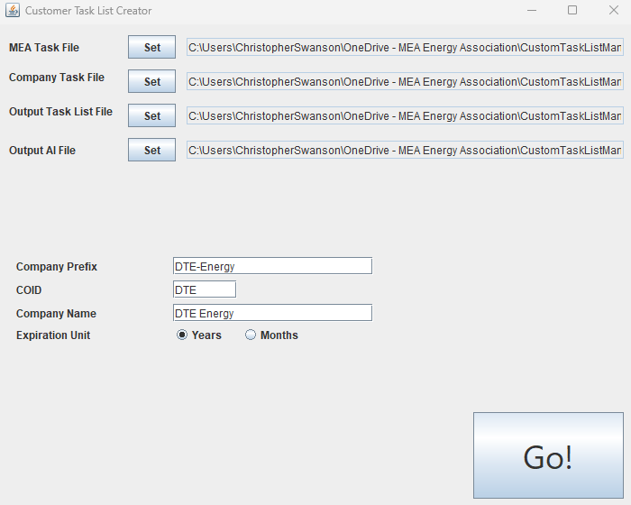
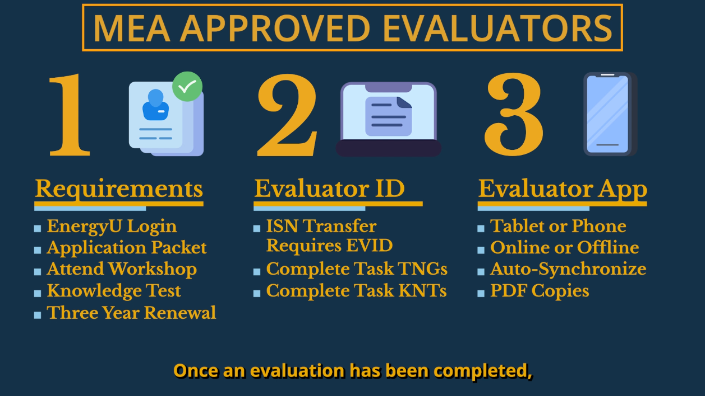
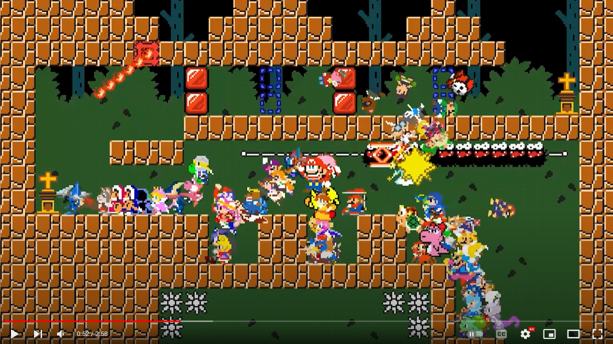
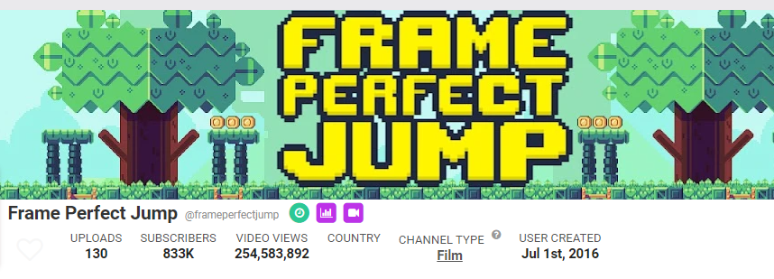

I encountered a process at work that involved combining excel spreadsheets from customers into our own and generating a new file. This process was laborious and a single file could take all day to complete. I wrote a program that would take the customer data formatted in an input file, and produce new Excel files with all of the necesary information. A single file could take over a day to complete, but now it takes about 30 minutes. The program was written in Java with the NetBeans IDE.
I created a professional training library of over twenty videos detailing all aspects of the company software. These videos ranged from user videos explaining how to reset password, to administrative topics regarding security. I craeted these videos with professional tools including Premiere Pro, After Effects, Audition, and photoshop. I also used Envato Elements to bring in premade assets for the production.
I had the idea of creating an animation tool to race thousands of characters within a pixelated environment. The tool needed to handle collision detection for thousands of characters and manage sound and graphics. The software was built in Adobe Animate using ActionScript 3.0.
Produced hundreds of videos for YouTube using assets from various media properties to tell engaging stories. Produced one video a week and released to a global audience. Main channel has over 800k subscribers and 250 million views
